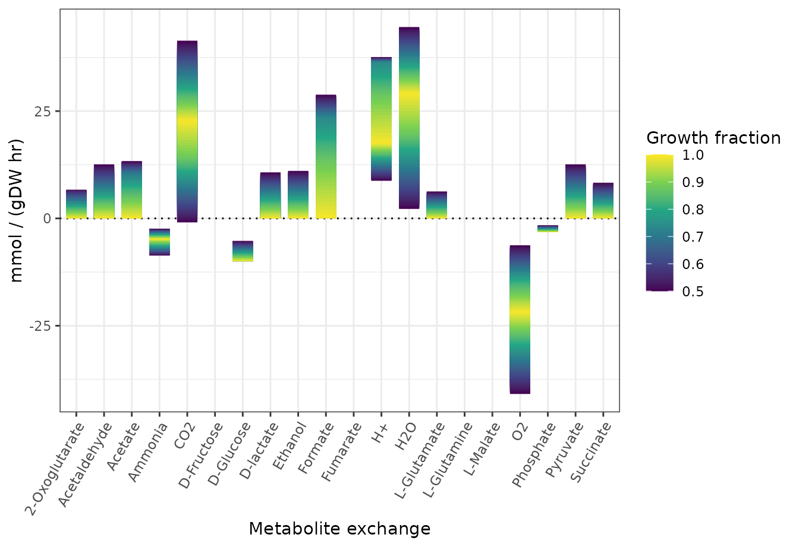

Variabilibity in metabolite uptake/production of E. coli
This guide introduces Flux Variability Analysis (FVA) as applied in cobrar to the core metabolic network model of Escherichia coli. Here, FVA is applied to estimate possible flux ranges for metabolite exchanges (positive value = production, negative values = consumption) assuming a minimal media with D-glucose as sole carbon source and under aerobic or anaerobic growth conditions.
For the following example, two packages are required:
library(cobrar)
#> Loading required package: Matrix
#> cobrar uses...
#> - libSBML (v. 5.19.0)
#> - glpk (v. 5.0)
library(ggplot2)Aerobic growth conditions
fpath <- system.file("extdata", "e_coli_core.xml", package="cobrar")
mod <- readSBMLmod(fpath)
fvares <- fva(mod, react = mod@react_id[grepl("^EX_",mod@react_id)],
opt.factor = seq(0.5, 1, length.out = 61))
fvares$react_name <- mod@react_name[match(fvares$react, mod@react_id)]
fvares$react_name <- gsub(" exchange$","",fvares$react_name)
ggplot(fvares,
aes(x = react_name)) +
geom_hline(yintercept = 0, linetype = 3) +
scale_color_viridis_c() +
geom_linerange(aes(ymin = min.flux, ymax = max.flux, col = growth.fraction),
linewidth = 6) +
labs(x = "Metabolite exchange",
y = "mmol / (gDW hr)",
color = "Growth fraction") +
theme_bw() +
theme(axis.text.x = element_text(angle = 60, hjust = 1, vjust = 1))
Anaerobic growth conditions
mod_anero <- changeBounds(mod, "EX_o2_e", lb = 0)
fvares <- fva(mod_anero, react = mod_anero@react_id[grepl("^EX_",mod_anero@react_id)],
opt.factor = seq(0.5, 1, length.out = 61))
fvares$react_name <- mod_anero@react_name[match(fvares$react, mod_anero@react_id)]
fvares$react_name <- gsub(" exchange$","",fvares$react_name)
ggplot(fvares,
aes(x = react_name)) +
geom_hline(yintercept = 0, linetype = 3) +
scale_color_viridis_c() +
geom_linerange(aes(ymin = min.flux, ymax = max.flux, col = growth.fraction),
linewidth = 6) +
labs(x = "Metabolite exchange",
y = "mmol / (gDW hr)",
color = "Growth fraction") +
theme_bw() +
theme(axis.text.x = element_text(angle = 60, hjust = 1, vjust = 1))